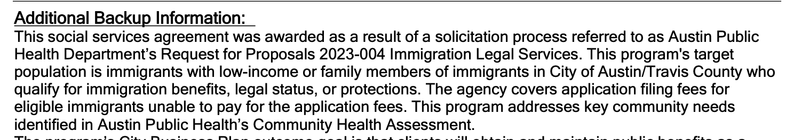
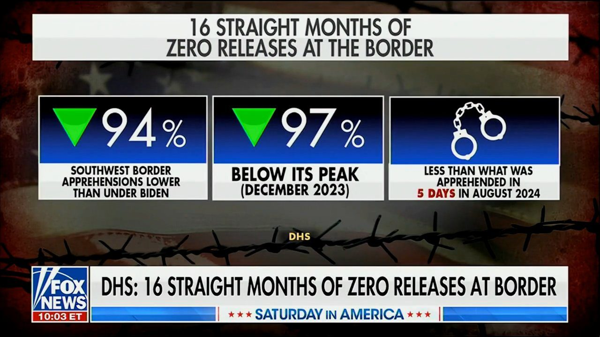

President Trump achieves a total victory, reaching an agreement with Denmark and Greenland to grant the US military autonomy over Greenland and the ability to block foreign presence on the island, while establishing a permanent military presence.
The deal will likely expand to economic and resource access over time as the US fully integrates the North Pole into its overseas empire.
Follow: @AFpost
This historic deal is a huge win for the United States and the American people. Thanks to President Trump’s vision and leadership, this historic agreement permanently guarantees U.S. security interests in the Arctic at zero cost to the U.S. taxpayer.
Greenland will forever be part of the strategic defense area of North America and exclude any adversary from it and the surrounding area.
This deal permanently and completely addresses our national security concerns in Greenland.
Austin city council will approve an extra $126k next week to pay immigration filing fees for immigrants
Theres just something a bit weird about our local property taxes going towards paying fees imposed by a department our federal income taxes pays for, all going through the catholic church as a middle man, for the purposes of 'public health'.


A secure border means locking every door, including the H-1B back door.
Fake employers. Sham jobs. Visa mills. Worker exploitation.
The loopholes are closing. The raids are real. The handcuffs are ready.
Under @POTUS, America First means American workers first.
President Trump signs an H1B visa executive order to investigate employers who may have fired American workers for foreigners.
#BREAKING: Employment fell in U.S. cities where ICE arrests surged the most.
JUST IN: DHS Secretary Markwayne Mullin says the department is investigating 1,620 cases of alleged voter fraud involving noncitizens casting ballots in U.S. elections.
Mullin says DHS has made 151 arrests and is reviewing 300,000 additional cases.
"The president was right when he said there was a tremendous amount of fraud in the election. We continue to see that. Every single vote Kayleigh that we talk about that was at the hands of an illegal canceled out a citizen that was legally registered and able to vote." | @kayleighmcenany @SatAmericaFNC
Stay up to date with the latest headlines and breaking news — download the FOX News app:
Noncitizen voting is widespread, commonplace and pervasive. Also: all blue states have refused to share their voter roles and liberal judges have refused to allow DHS to scrub them.
🇺🇸BREAKING: U.S. stock markets will begin trading 23 hours a day, 5 days a week from December 6
The planned trading week will run from Sunday evening through Friday evening, with a one-hour daily maintenance break.
Nasdaq and NYSE Arca are among the venues preparing for expanded hours, while the regular 9:30 a.m. – 4 p.m. session remains unchanged.
The SEC is upgrading market infrastructure for 23/5 trading, with full 24/7 trading potentially coming later.
Brokers will decide which securities and overnight services customers can access, while thinner liquidity could mean wider spreads and greater volatility.
President Trump said this afternoon that he is going to create an AI Force, similar to Space Force.
POTUS also announced that he will be naming an AI Czar. .
Many people think that the words “Artificial Intelligence” are inaccurate, and very ineloquent, relative to AI, or Artificial Intelligence. A far more elegant and accurate description of this new phenomena would be Superior Intelligence (SI) or, Extreme Intelligence (EI) or, Supreme Intelligence (SI). This is a Poll, and I would appreciate everybody voting! Which is the best name for this ever growing “Revolution?” President DONALD J. TRUMP
BREAKING: France is facing a growing fuel shortage with 11% of the country's gas stations now reporting that they are out of stock of either gas or diesel, according to the latest data published by the French government.
In parts of the country, this figure now stands as high as 16%.
Meanwhile, the average price of diesel is up to €2.38 per liter, less than 1% away from a record high, and the average price of gasoline is also at or above record highs.
French President Macron convened an emergency meeting to discuss the crisis and the government is preparing to offer financial support to high-mileage drivers.
Energy inflation is skyrocketing.
BREAKING: European governments are discussing imposing a "bloc-wide windfall tax" on energy companies as record fuel prices pile pressure on leaders to contain mounting public discontent.
Across the EU, gas prices are now up +24% year-over-year, while diesel is up +38%, and jet fuel is up over +100%.
Europe's worst-ever energy crisis is getting worse.
The landing location has officially been named for NASA's Dragonfly mission!
The global body responsible for designating objects in space has approved a name for the large dune field on Saturn's moon Titan: Ahmakiq Undae.
Here's the story behind it: https://science.nasa.gov/blogs/dragonfly/2026/09/02/nasas-dragonfly-gets-wired-up-while-titan-landing-area-is-named/?utm_source=TWITTER&utm_medium=NASA_Marshall&utm_campaign=NASASocial&linkId=1010230549
.@SECWAR "The only media that does fake propaganda better than Iran is our Trump-deranged media...
We have a DERANGED MEDIA that HATES OUR PRESIDENT more than they love our country.
We will do our job NO MATTER WHAT. We will complete the mission. IRAN WILL NEVER HAVE A NUCLEAR WEAPON."
FLASHBACK: Biden also changed White House press pool, cutting off more than 440 reporters' credentials
JUST IN: 🇺🇸🇮🇱 Texas adopts new curriculum requiring public schools to study Israel's history.
One requirement covers the creation of the modern state of Israel in 1948 in what the standards describe as the ancestral homeland of the Jewish people.
Students are also required to read Anne Frank's diary.
JUST IN: 🇮🇷 Iran says ending the war requires fighting to stop on all fronts, frozen assets to be released, and the naval blockade to end.
🚨#BREAKING: Iran formally sends conditions to Trump for ending the war, including lifting the naval blockade & unfreezing Iranian funds.
🚨#BREAKING: Rep. Lauren Boebert is accused in a sworn House ethics complaint of having lesbian affairs with 2 female staffers under her supervision.
JUST IN: Mexico’s Claudia Sheinbaum reveals she had a “very good” call with Trump as the two countries push toward a new trade deal.
#BREAKING: F-16 intercepts aircraft that violated Camp David airspace with Trump on site.
#BREAKING: USDA cracks down on 170 stores across New York over SNAP fraud.